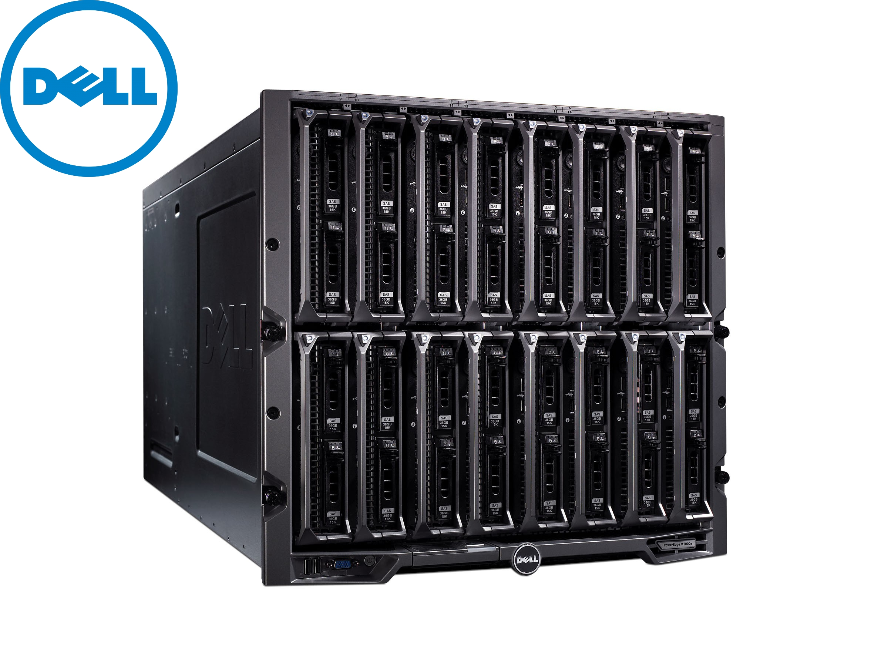
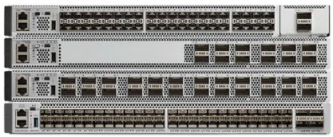
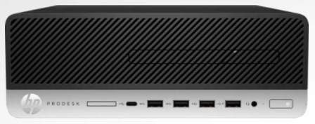
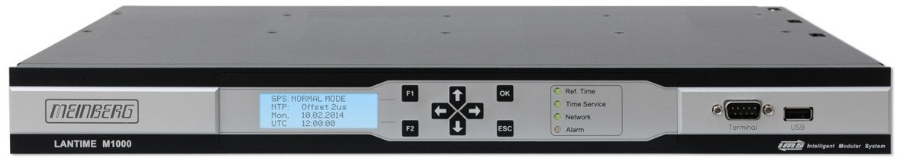
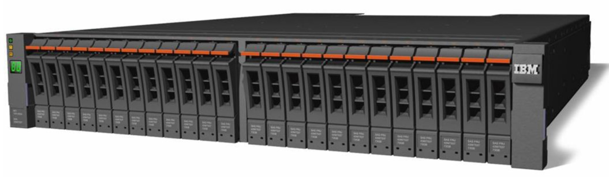

Galerija proizvoda s kojima se susrećemo u svakodnevnom radu..

Proizvodi Dell blade servera izgrađeni su oko svog M1000e kućišta koje može držati njihove noževe poslužitelja, ugrađenu mrežu EqualLogic iSCSI za pohranu i I / O module, uključujući Ethernet, Fiber Channel i InfiniBand sklopke.

Serija Cisco Catalyst 9500 preklopnika prva je serija 100/40-Gbps preklopnika stvorena za "campus" konfiguracije mreža. Nedavno je prepoznat kao CRN-ov općenito najbolji mrežni proizvod 2017. godine. Dizajnirani za sigurnost, Internet stvari (IoT) i oblak, Catalyst 9500 preklopnici s fiksnom jezgrom su gradivni blokovi velike gustoće za mrežu sljedeće generacije, temeljenu na namjeri.

Osnovan za poslovanje, HP ProDesk 600 SFF ima snažnu sigurnost i sveobuhvatne značajke upravljanja u modernom i kompaktnom dizajnu za moderno radno mjesto.

Svestrano i modularno rješenje za vremensku i frekvencijsku sinkronizaciju u kućištu visine 1U. Dodavanjem drugog modula sata i drugog napajanja IMS - M1000 pretvara se u potpuno redudantno rješenje. Model izmjeničnog napajanja širokog raspona i model napajanja istosmjerne struje od 20-60 V mogu se kombinirati i prilagoditi prema potrebi.

Najnoviji uređaj Storwize V7000 predstavlja veliki pomak u IBM-ovom razmišljanju za njegovu liniju pohrane srednjeg dometa. Do sada je licencirao proizvode drugih dobavljača, poput LSI, i preprodavao ih pod svojim imenom. V7000 je jedan od prvih potpuno IBM-ovih uređaja i dizajniran je za pružanje značajki pohrane na razini poduzeća srednjim poduzećima.